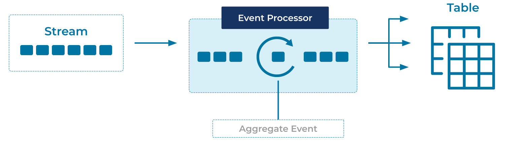

Projection Table
One of the first questions we want to ask of a stream of events is, "Where are we now?"
We have a stream of sales events, we'd like to have the total sales
figures at our fingertips. We have a stream of login events, we'd
like to know when each user last logged in. Our trucks send GPS data
every minute, we'd like to know where each truck is right now.
How do we roll up data efficiently? How do we preserve a complete event log and enjoy the fast queries of an "update in place"-style database?
Problem
How can a stream of change events be summarized into the current state of the world, efficiently?
Solution

We can maintain projection tables that behave just like materialized views in a traditional database. As new events come in, the table is automatically updated, giving us an always-live picture of the system. Events with the same key are considered related, with newer events being interpreted as updates or deletions (depending on their contents) of older events.
Like a materialized view, projection tables are read-only. To change them, we change the underlying data by recording new events to their underlying streams.
Implementation
ksqlDB supports easy creation of summary tables/materialized views. We declare them once, and the server will maintain their data as new events stream in.
As an example, imagine we are shipping packages around the world. As they reach each point on their journey, they're logged with their current location.
We'll start with a stream of check-in events:
CREATE OR REPLACE STREAM package_checkins (
package_id BIGINT KEY,
location VARCHAR,
processed_by VARCHAR
) WITH (
KAFKA_TOPIC = 'package_checkins_topic',
VALUE_FORMAT = 'AVRO',
PARTITIONS = 3
);
Then we'll create a projection table, tracking each package_id and the
newest location:
CREATE OR REPLACE TABLE package_locations AS
SELECT
package_id,
LATEST_BY_OFFSET(location) AS current_location
FROM package_checkins
GROUP BY package_id;
Querying that stream in one terminal:
SELECT *
FROM package_locations
EMIT CHANGES;
...and inserting some data in another:
INSERT INTO package_checkins ( package_id, location ) VALUES ( 1, 'New York' );
INSERT INTO package_checkins ( package_id, location ) VALUES ( 1, 'London' );
INSERT INTO package_checkins ( package_id, location ) VALUES ( 2, 'London' );
INSERT INTO package_checkins ( package_id, location ) VALUES ( 1, 'Paris' );
INSERT INTO package_checkins ( package_id, location ) VALUES ( 3, 'Paris' );
INSERT INTO package_checkins ( package_id, location ) VALUES ( 2, 'Paris' );
INSERT INTO package_checkins ( package_id, location ) VALUES ( 3, 'London' );
INSERT INTO package_checkins ( package_id, location ) VALUES ( 1, 'Rome' );
INSERT INTO package_checkins ( package_id, location ) VALUES ( 2, 'Rome' );
INSERT INTO package_checkins ( package_id, location ) VALUES ( 3, 'Washington' );
Results in a table of each package's last-known location:
+------------+------------------+
|PACKAGE_ID |CURRENT_LOCATION |
+------------+------------------+
|1 |Rome |
|2 |Rome |
|3 |Washington |
As new data is inserted, package_locations stays updated, so we can
see the current location of each package without scanning through the
event history every time.
Considerations
In the example above, it's important to consider partitioning. When we
declared the package_checkins stream, we marked the package_id as
the KEY. This ensures that all events with the same package_id
will be stored in the same partition, in turn ensuring that for a
given package_id, newer events have a higher offset value. Thus
when we query for the LATEST_BY_OFFSET, we're always getting the
newest event for each package. If we'd chosen a different partitioning
key, or not specified one at all, we'd get very different results.
LATEST_BY_OFFSET is only one of the many summary
functions ksqlDB supports, from simple sums and
averages to time-aware functions and histograms. And beyond those, we can
easily define our own custom functions or look to
Kafka Streams for complete control.
References
- Aggregate functions in the ksqlDB documentation.
- Creating custom ksqlDB functions in the ksqlDB documentation.
- Related patterns: State Table